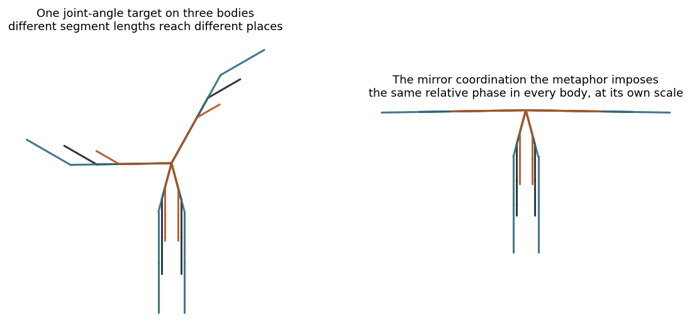

Data and results
Every computational output from the coordination model, with the code that produces each one. The theory and the formalism live on the Methodology tab; this page collects the numbers and the figures. All of it runs on numpy and matplotlib, and the code and the data fetch live in the repository under model/.
1. Fit to CMU motion-capture
We fit the Gaussian graphical model to CMU Graphics Lab motion-capture for three tasks, walk, run, and jump, with one subject and two trials each, over 50 rotational degrees of freedom. The fit tests the model’s three premises, that movement uses few dimensions, that its dependence structure follows anatomy, and that the sign of coordination changes from one movement to another. The code is model/fit_ggm.py, and model/fetch_cmu.sh downloads the six trials first.

(A) Effective dimensionality
The raw-covariance participation ratio is dominated by a few large-amplitude joints and overstates the collapse; the standardized (correlation) ratio is the honest measure. Even standardized, about five of the fifty dimensions carry the movement.
| Task | frames | PR (raw cov) / 50 | PR (correlation) / 50 |
|---|---|---|---|
| walk | 645 | 2.74 | 4.78 |
| run | 278 | 2.98 | 5.05 |
| jump | 854 | 2.65 | 4.96 |
(B) Anatomical recovery
The estimated partial correlations, the edge weights of the graphical model, peak between anatomically adjacent joints by a factor of about two. The separation runs well above chance (AUC 0.5 is chance, 1 is perfect).
| Task | |partial corr|, adjacent | |partial corr|, non-adjacent | separation AUC |
|---|---|---|---|
| walk | 0.454 | 0.206 | 0.798 |
| run | 0.429 | 0.239 | 0.712 |
| jump | 0.511 | 0.253 | 0.817 |
(C) The sign flips across tasks
The correlation of the matched flexion axis of paired limbs changes sign from walk and run to jump, while the effective dimensionality barely moves. Walk and run sit at anti-phase (a relative phase of half a cycle), jump at in-phase (a relative phase of zero).
| Limb pair (matched flexion axis) | walk | run | jump |
|---|---|---|---|
| legs, left / right | −0.92 | −0.89 | +1.00 |
| arms, left / right | −0.95 | −0.85 | +0.93 |
| left arm / right leg (contralateral) | −0.94 | −0.92 | +0.07 |
| left arm / left leg (ipsilateral) | +0.93 | +0.79 | +0.08 |
Reproduce: cd model && bash fetch_cmu.sh && python3 fit_ggm.py
2. Two-body convergence (step 1)
Step 1 of the intended outcome asks whether a metaphor drives two differently built bodies onto the same relative-phase coordination, where a joint-angle instruction cannot. We ran it on the same model, with no new data. A teacher trained to an anti-phase (mirror) arm coordination sits at a relative-phase order parameter r = −0.69. Two learners with different anatomy, a different baseline precision and different segment lengths, start in-phase, on the opposite side of zero. As the shared metaphor strengthens, both learners cross zero and settle near the teacher, so the gap closes from about 1.3 to about 0.1. A joint-angle instruction sets a mean pose and never touches the precision matrix, so its gap stays flat at every strength.

| body | baseline r | under the metaphor (β = 4) | gap to teacher |
|---|---|---|---|
| teacher | −0.69 | target | — |
| learner A | +0.61 | −0.53 | 1.30 → 0.16 |
| learner B | +0.56 | −0.71 | 1.24 → 0.03 |
The joint-angle channel gap stays 1.27 at every strength, since a mean pose carries no coordination. The two channels differ in kind, not in degree.

Reproduce: cd model && python3 two_body.py
3. Code and reproducibility
The repository holds everything under model/.
taichi_model.py, the core Gaussian graphical model of body coordination.fit_ggm.py, the fit to CMU motion-capture, withfetch_cmu.shto download the trials.two_body.py, the two-body convergence of step 1.README.md, the run instructions and the committed results.
cd model bash fetch_cmu.sh && python3 fit_ggm.py # section 1 python3 two_body.py # section 2